Brows & Lashes Profesional
We enhance your style with meticulous detail, strict hygiene, and fully personalized service.
¿Por qué elegir JGo Brows?
Conoce la experiencia, formación y filosofía que hacen de JGo Brows una marca de confianza en Calgary.
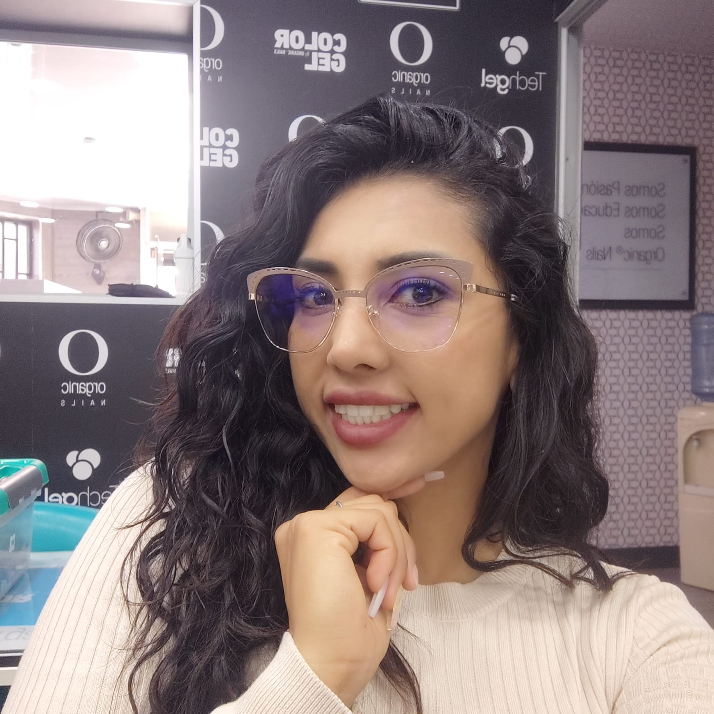
En JGo Brows serás atendida por nuestra profesional Julie Gómez, artista colombiana galardonada con un Récord Guinness en micropigmentación de cejas en el año 2022.
Cuenta con más de 12 años de experiencia en el mundo de la belleza y se mantiene en constante actualización, utilizando productos hipoalergénicos que cuidan tu salud y realzan tu belleza.
Julie realizó su formación como Cosmiatra en Venezuela con la ponente María Eugenia Draganov en el Centro Médico Estético Integral L’Marie.
Se certificó como Master en Extensión de Pestañas, maquilladora permanente con la artista colombiana Nina Joaqui en MPR Academy (actualmente ILEV), y en la técnica de despigmentación con Julio César Giraldo.
Ha participado en congresos internacionales de maquillaje permanente junto a artistas de primer nivel como Rosa Lux, Paulina Osinkwaska, Ester García, Marcos Leandro, Kenya Orsini y Tamara Souza.
Nuestros servicios requieren habilidad, precisión y experiencia, y en JGo Brows encontrarás las tres.
JGo también es maestra, dicta cursos personalizados y asesorías a aprendices, transmitiendo técnicas profesionales que generan confianza y resultados seguros.
En JGo Brows entendemos que ser única es tu mayor fortaleza.
Por eso realizamos una evaluación morfológica personalizada, conocemos tus gustos y diseñamos un servicio exclusivo que te haga sentir segura, cómoda y hermosa.
JGo Brows ofrece servicios profesionales en la comunidad de Southland, en el suroeste de Calgary, cerca de la estación del tren.
Ubicado dentro de Y Nails & Spa, disfrutarás de un espacio tranquilo, privado y sin distracciones, con atención personalizada uno a uno.
Nuestro horario habitual es de lunes a viernes de 10:00 am a 6:00 pm.
También ofrecemos citas temprano o en la noche (sujetas a disponibilidad) por una pequeña tarifa adicional.
Reservar tu cita es muy fácil: visita www.jgobrows.ca, consulta horarios disponibles y agenda online.
¿Preparada para el cambio? JGo Brows es el lugar perfecto para lograr el look que mereces.
Catálogo de servicios
Servicios profesionales organizados por categoría
Permanent Make Up Services
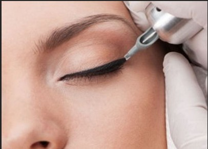
PMUTécnica subdérmica para embellecer y corregir rasgos faciales.
¿Qué es?
Técnica especializada que deposita pigmentos de manera subdérmica para lograr un resultado natural y armonioso.
Duración:Entre 2 y 4 años. Retoques recomendados al mes, al año y luego cada 2 a 4 años.
¿Por qué elegirnos?
- Técnica delicada y natural
- Pigmento implantado a 2 mm
- Técnicas manuales y digitales
No, Manejamos anestesia tópica, el dolor es reducido en un 70%, es un procedimiento cómodo.
Contraindicaciones:Personas con las siguientes condiciones preguntar primero con la asesora:
- Lactancia
- Diabetes
- Hipertensión no controlada
- Acné activo
- Enfermedades de la piel
- 🚫 Evita realizarte el procedimiento durante tu ciclo menstrual.
- 🚫 No te broncees 30 días antes ni después del tratamiento.
- 🚫 No consumir alcohol ni cafeína 48h antes.
- 🚫 No aplicar Botox o Ácido Hialurónico 4 meses antes o después.
- 🚫 En pieles oscuras pueden requerirse sesiones adicionales.
- 🚫 No tomar aspirina o anticoagulantes 1 semana antes.
- 🚫 No hacer ejercicio el día de la cita ni 8 días después.
- 🚫 En piel grasa los resultados pueden verse más suaves.
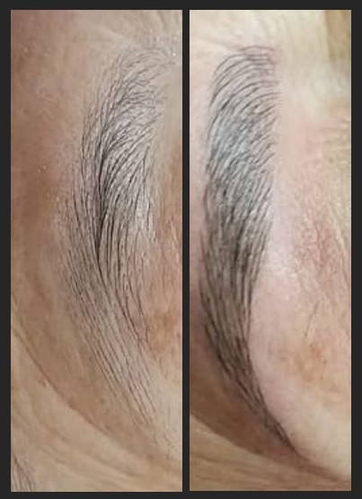
BrowsCejas naturales creadas vello a vello.
Duración del procedimiento: 2h 30min
Tiempo de permanencia en la piel:
Tiene una duración aproximada de 6 meses a dos años, lo cual dependerá de las características cutáneas de la persona, así como de su estilo de vida, pues personas que viven en zonas calurosas y realizan ejercicio tienden a retener menos tiempo el pigmento por la vasodilatación del poro. Se recomienda realizar una sesión a las 3 o 4 semanas para reforzar el color y luego una sesión anual.
Descripción del servicio:
El microblading de cejas se realiza depositando manualmente un pigmento en la dermis papilar de la piel mediante una pluma especial llamada tebori o inductor. Es la técnica más novedosa dentro de la industria del maquillaje permanente, en la creación de diseño de cejas pelo a pelo.
Resultado: 6 meses a 2 años
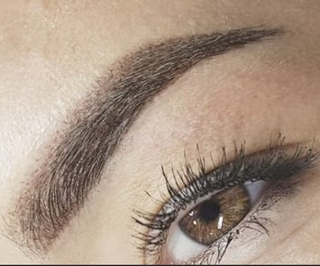
BrowsCejas suaves con efecto maquillaje.
Duración del procedimiento: 2h 30min
Esta técnica es excelente para quienes ya tienen cejas pobladas, pero que requieren relleno y definición. Normalmente, lo que haríamos a diario con el maquillaje, pero, ¿por qué perder tiempo en eso cuando podemos tener las cejas siempre perfectas?
Tiempo de permanencia en la piel:
Tiene una duración aproximada de 8 meses a dos años, lo cual dependerá de las características cutáneas de la persona, así como de su estilo de vida, pues personas que viven en zonas calurosas y realizan ejercicio tienden a retener menos tiempo el pigmento por la vasodilatación del poro.
Se recomienda realizar una sesión a las 3 o 4 semanas para reforzar el color y luego una sesión anual.
Descripcion del servicio:
Utilizamos un dispositivo eléctrico, llamado dermógrafo, para colocar el pigmento sobre la piel con un movimiento rápido de la mano, lo que da como resultado un efecto pixelado de maquillaje en polvo. Para agregar densidad, podemos superponer los píxeles de forma repetitiva, dando un efecto sombreado. La idea es crear un degradado de color donde la parte de la cola se ve más oscura y la parte inicial más clara.
✔️Esta técnica es ideal para personas de piel normal y grasa.
⚠️El Powder Brows está contraindicado en personas con diabetes no cicatrizante.
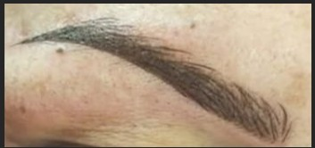
BrowsEs la combinación de dos técnicas en una sola ceja (Microblading + Powder brows).
Duración del procedimiento: 2-3 horas
Esta Tecnica para quienes buscan un aspecto de cejas más pobladas y definidas, pero sin perder la apariencia natural.
Tiempo de permanencia en la piel:
Tiene una duración aproximada de 8 meses a dos años, lo cual dependerá de las características cutáneas de la persona, así como de su estilo de vida, pues personas que viven en zonas calurosas y realizan ejercicio tienden a retener menos tiempo el pigmento por la vasodilatación del poro. Se recomienda realizar una sesión a las 3 o 4 semanas para reforzar el color y luego una sesión anual.
Descripcion del servicio:
Realizamos pelitos para dar una apariencia natural pero agregamos sombra para generar un efecto de maquillaje; De esta manera logramos una ceja definida sin verse del todo maquillada. La primera parte consiste en realizar las incisiones finas y precisas del microblading, utilizando una herramienta llamada “pluma” con pequeñas cuchillas en la punta. Esto permite dibujar pelos individuales que imitan la apariencia de las cejas naturales. Posteriormente, se aplica la sombra con una máquina especializada. Se utilizan pigmentos semipermanentes que se insertan en la capa superior de la piel, rellenando los espacios entre los trazos del microblading.
✅Esta técnica es ideal para todo tipo de piel.
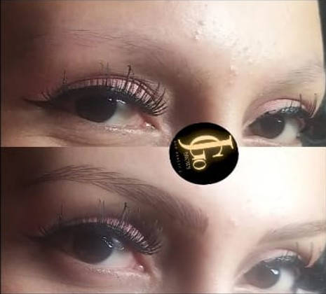
OncologyReconstrucción hiperrealista de cejas.
Duración del procedimiento: 2h a 5h
El Hair Stroke es una técnica de maquillaje semipermanente, cuyo objetivo es corregir o reconstruir completamente una ceja carente de vello o ausente, realizando vellos de forma artística creando un efecto hiperrealista.
A diferencia del microblading, El hairstroke es una técnica avanzada de micropigmentación que recrea la apariencia de los vellos naturales de las cejas mediante el uso de una máquina y agujas ultrafinas.
Tiempo de permanencia en la piel:
Los resultados pueden durar entre 12 y 36 meses, dependiendo del tipo de piel, el metabolismo y los cuidados posteriores. Se recomienda realizar una sesión a las 3 o 4 semanas para reforzar el color.
Descripcion del servicio:
Este procedimiento consiste en depositar cuidadosamente el pigmento en la epidermis con trazos finos y estratégicamente diseñados para imitar la dirección y el crecimiento natural de los vellos. El resultado es una ceja realista, con profundidad y textura, sin el efecto difuminado.
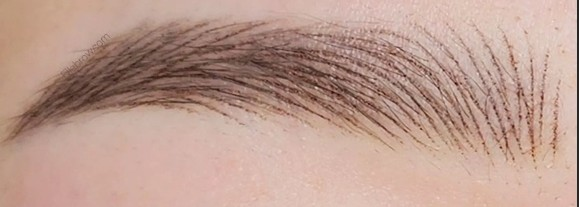
BrowsTécnica vanguardista ultra delicada.
Duración del procedimiento: 2h 30min
Nano Brows es una evolución vanguardista del microblading tradicional, también conocida como cejas de acariciamiento de cabello.
Nano Brows es una técnica de maquillaje semipermanente, cuyo objetivo es diseñar vellos de forma artística creando un efecto pincelada difuminada.
A diferencia del microblading y El hairstroke, Nano Borws esta es una tecnica sofisticada en la que el artista desplaza las agujas como si de danzar sobre la piel se tratara.
Tiempo de permanencia en la piel:
Esta tecnica tiene una duración aproximada de 8 meses a dos años, lo cual dependerá de las características cutáneas de la persona, así como de su estilo de vida. Se recomienda realizar una sesión a las 3 o 4 semanas para reforzar el color y luego una sesión anual.
Descripcion del servicio:
Nuestro método de implantación Nano Brows utiliza un dispositivo digital de última generación, que permite precisión y complejidad en la aplicación de pigmentos, además de ser mucho más suave para la piel. Esto te asegura obtener los mejores resultados posibles de nano cejas, con cejas más llenas y definidas que tienen un aspecto natural impresionante.
✅Ideal para todo tipo de piel
Lips & Eyes
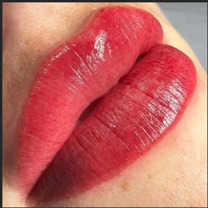
LipsMejora el color, contorno y simetría de los labios.
Duración: 2 a 3 horas
Descripcion del servicio:
Esta es una tecnica en la que introducimos pigmentos en la capa superficial de la piel mediante una herramienta con microagujas. Es ideal para:
- Definir contornos poco marcados
- Corregir asimetrías labiales
- Dar color a labios pálidos o desiguales
- Rejuvenecer el rostro sin cirugía
Muchas personas la confunden con el tatuaje tradicional, pero la micropigmentación labial utiliza pigmentos menos densos, más naturales y diseñados para desvanecerse gradualmente.
Resultado: 8 meses a 2 años.
Retoque entre 4 y 6 semanas y luego anual.
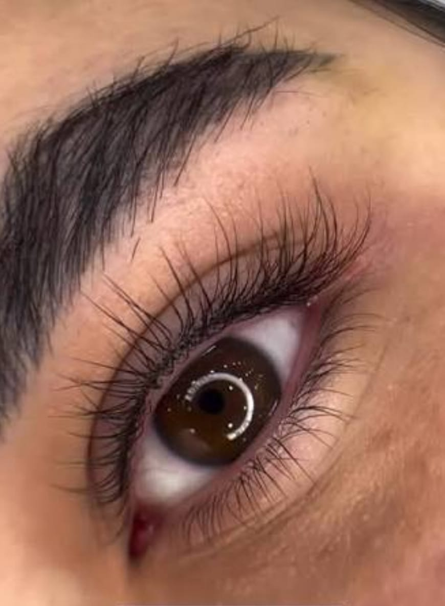
EyesIntensifica la mirada con un sombreado sutil.
Duración del procedimiento: 1h 30min
Resultado: 8 meses a 2 años
Sombreado delicado en la base de las pestañas, sin efecto maquillaje marcado.
Tiempo de permanencia en la piel:
Los resultados pueden durar entre 8 meses y 2 años, dependiendo de varios factores: tipo de piel, cuidados posteriores, calidad de los pigmentos y técnica aplicada. Lo más habitual es que se recomiende un retoque entre las 4 y 6 semanas posteriores, y luego uno al año para mantener el color vivo.
Descripcion del servicio:
Se realiza un sombreado sutil en la base de las pestañas, logrando mayor densidad y definición sin que se note maquillaje. Perfecto para quienes desean realzar la mirada de forma discreta.
Utilizamos un dispositivo eléctrico, llamado dermógrafo, para colocar el pigmento sobre la piel con un movimiento rápido de la mano, lo que da como resultado un efecto pixelado de maquillaje en polvo y realce de las pestañas naturales.
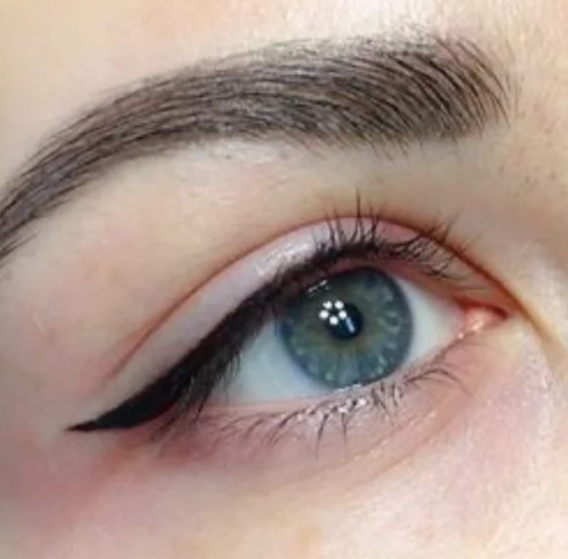
EyesDelineado definido sin maquillaje diario.
Duración: 2 horas aprox.
Despídete de la molestia de aplicar delineador todos los días y abraza la belleza de unos ojos definidos permanentemente.
Duración:
Los resultados pueden durar entre 8 meses y 2 años, dependiendo de varios factores: tipo de piel, cuidados posteriores, calidad de los pigmentos y técnica aplicada. Lo más habitual es que se recomiende un retoque entre las 4 y 6 semanas posteriores, y luego uno al año para mantener el color vivo.
Descripcion del servicio:
Utilizamos un dispositivo eléctrico, llamado dermógrafo, para colocar el pigmento sobre la piel, realizamos un delineado con diseño previo aprobado por la paciente.
Paramedical & Oncology
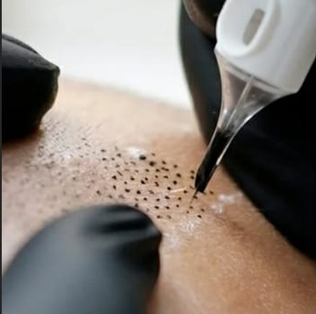
MedicalCorrección estética con enfoque médico.
Duración: 3 a 5 horas apx.
Descripcion del servicio:
Es un proceso que permite la corrección de cicatrices, areolas, estrías, vitiligo, alopecia entre otras imperfecciones mediante la Micropigmentación en la piel. Este proceso es recomendado para personas que han pasado por procedimientos quirúrgicos o cáncer de mama.
Cada sesión de 3 horas tiene costo de $500
Oncológica y reparadora:
Dirigido a aquellas personas que van a ser o están sometidas a procesos oncológicos, y a intervenciones quirúrgicas. Realizaremos:
- Micropigmentación de cejas
- Micropigmentación de pestañas
- Micropigmentación areolar
- Micropigmentación de cicatrices
- Micropigmentación de rostros quemados
Vitíligo:
Con esta técnica de la micropigmentación se ayuda a disimular notoriamente el vitíligo. Los vitíligos se pigmentarán una vez que lleven estables al menos un mes, y no todos los vitíligos se pueden pigmentar.
Capilar - Alopecia:
Ideal para aquellas personas con alopecia que deseen proyectar un cuero cabelludo abundante, o camuflar una cicatriz en el cuero cabelludo, ya que visiblemente reduce años y da un aspecto saludable.
Duracion:
Los resultados pueden durar entre 8 meses y 2 años, dependiendo de varios factores: tipo de piel, cuidados posteriores, calidad de los pigmentos y técnica aplicada. Lo más habitual es que se recomiende un retoque entre las 4 y 6 semanas posteriores, y luego uno al año para mantener el color vivo. La profesional te indicara de acuerdo a tu caso particular.
- Cicatrices
- Areolas
- Vitíligo
- Alopecia
- Procesos oncológicos
Lash Extensions
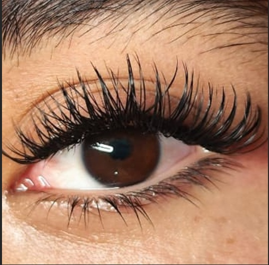
ClassicEfecto máscara de pestañas, elegante y natural.
Descripcion del procedimiento:
Son cabellos sintéticos, de pelo y fibras naturales que vienen individuales, pelo por pelo, de diferentes texturas, formas y tamaños; Las pegamos sobre cada pelito de pestaña natural sin tocar la piel.
Ventajas del tratamiento:
- Los resultados son inmediatos al finalizar el tratamiento.
- No daña las pestañas naturales ya que no tiene contacto con la raíz ni la piel.
- Son la mejor opción para tener una mirada deslumbrante, colocamos en todos y cada uno de los pelitos naturales sin saltarnos alguno, obteniendo resultados abundantes.
Cuanto tiempo dura el procedimiento?
El procedimiento dependerá de la escasez o abundancia de pestañas naturales que tenga la paciente y la técnica elegida.
Tiempo de permenacia en las pestañas:
Nuestras pestañas naturales tienen un ciclo de vida promedio entre 30 a 90 días, motivo por el cual se irán cayendo y se necesitara retoques o mantenimientos cada 15 o 20 días para remplazar las que se han caído al cambiar.
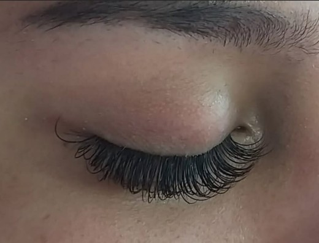
FillRelleno para set clásico.
Duración del procedimiento: 1h 30min
Descripción del servicio:
Directrices para el servicio de relleno:
Para poder optar a un surtido de 1–3 semanas, debes tener al menos el 40% de tus extensiones de pestañas restantes de la cita anterior.
A las 3 semanas, todavía se requiere un 40% de retención para que se considere un relleno. Cualquier cosa menos puede considerarse un conjunto completo.
🔔 Importante: Si reservas un relleno y llegas con menos del 40% de tus pestañas restantes, pueden aplicarse cargos adicionales o el servicio puede actualizarse a un juego completo. Si agendas cita pasadas 3 semanas, se considerará como un set nuevo.
Los rellenos extranjeros se gestionan caso por caso. Pueden requerir tiempo adicional o la eliminación de extensiones existentes antes de poder aplicar un nuevo conjunto, y pueden aplicarse cargos adicionales.
Requiere mínimo 40% de retención.
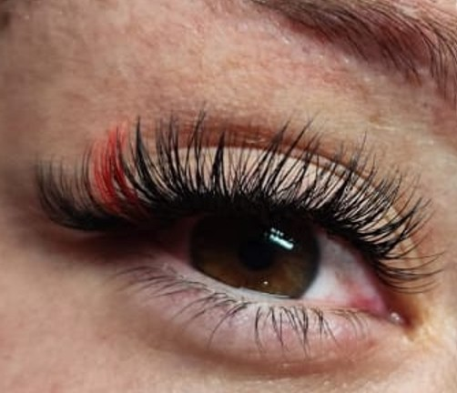
HybridMayor densidad sin exceso.
Duración: 2 - 2.5 horas (varía según tu recuento natural de pestañas).
Este estilo añade suavidad, textura y dimensión, convirtiéndolo en una excelente para quienes buscan un efecto naturalmente voluminoso.
✅Ideal para: Clientes con pestañas escasas o quienes quieren más volumen que un juego Classic pero prefieren un aspecto más suave y natural que un volumen completo.
❌No es ideal para: Clientes que buscan un aspecto de pestañas muy dramático o denso, ya que proporciona un volumen más sutil en comparación con los sets Volume o Mega Volume.
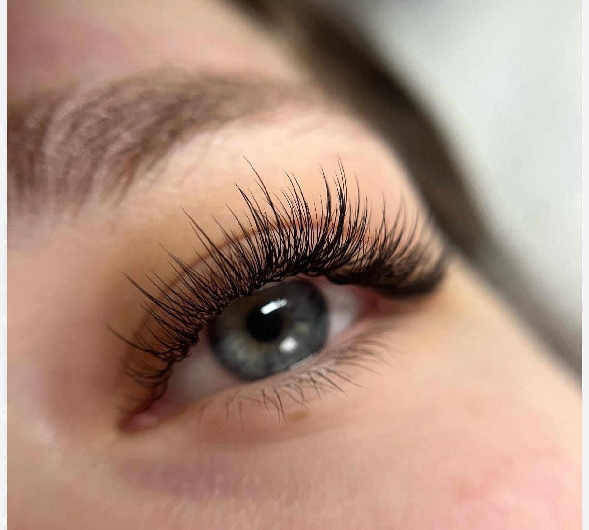
FillPestañas más abundantes y de aspecto natural con nuestro Hybrid Fill
Duración: 1.5 – 2 horas
Directrices para el servicio de relleno:
• Para poder optar a un surtido de 1-3 semanas, debes tener al menos el 40% de tus extensiones de pestañas restantes de la cita anterior.
• A las 3 semanas, todavía se requiere un 40% de retención para que se considere un relleno. Cualquier cosa menos puede considerarse un conjunto completo.
🔔 Importante: Si reservas un relleno y llegas con menos del 40% de tus pestañas restantes, pueden aplicarse cargos adicionales o el servicio puede actualizarse a un juego completo.
Si agendas cita pasadas 3 semanas, se considerará como un set nuevo.
Los rellenos extranjeros se gestionan caso por caso. Pueden requerir tiempo adicional o la eliminación de extensiones existentes antes de poder aplicar un nuevo conjunto, y pueden aplicarse cargos adicionales.
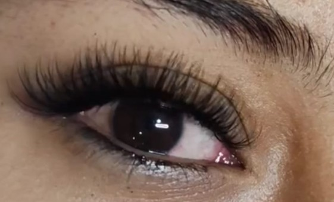
VolumeVolumen dramático y definido.
Duración: 2.5 – 2.75 horas
Descripción del servicio
El Volume Full Set crea un aspecto denso, esponjoso y ultra voluminoso aplicando varias extensiones ligeras por pestaña natural (2d,3d,4d).
Esta técnica da como resultado un aspecto de pestañas llamativo, perfecto para quienes aman pestañas plenas, dramáticas y llamativas.
✅ Mejor para: Clientes que desean un estilo de pestañas dramático y de alto impacto con cobertura total.
❌ No es ideal para: Clientes que buscan un toque sutil y natural: los set Clásico, Híbrido pueden ser más adecuados.
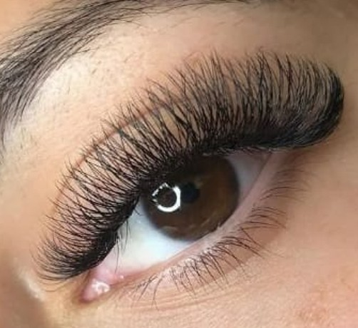
YYPerfecto para un look con volumen suave, sutil y con un aire ligero.
Duración: 2 – 2.5 horas
Descripción del servicio
Ofrece un volumen suave y son perfectos para clientes que buscan algo más abundante que las Classic, pero más ligeros que los sets Volume completo. Las pestañas YY son un gran paso adelante respecto a las clásicas, ofreciendo un aspecto suave y más abundante sin añadir peso. El diseño en forma de Y proporciona un efecto de volumen ligero que aumenta el volumen, manteniéndose natural y cómodo — ideal para pestañas finas o clientes con problemas de retención.
✅ Mejor para: Un aspecto más lleno que el Classic con una sensación ligera.
❌ No es ideal para: Quienes buscan un volumen dramático o denso.
Brows & Others
Diseño personalizado según tu rostro.
Depilación con hilo precisa y natural.
Depilación con cera rápida y efectiva.
Depilación facial precisa.
Coloración para definir y dar volumen.
Cejas alineadas y estilizadas.
Elevación natural de pestañas.
Pigmentación temporal con efecto relleno.
Limpieza profunda de pestañas.
Depilación de axilas.